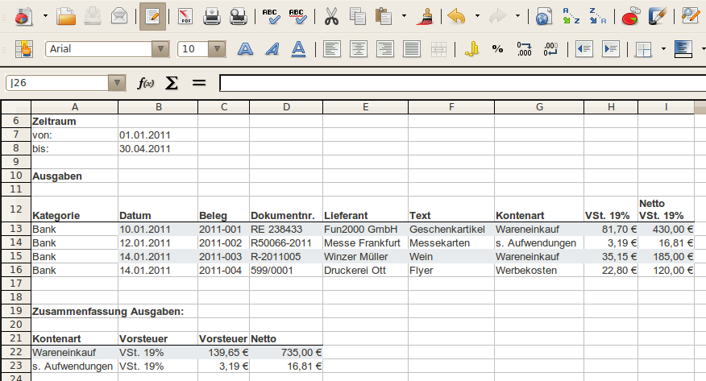

Exportiert eine Liste mit den Ausgaben (alle bezahlten Ausgabenbelege) in einer OpenOffice.org / LibreOffice Tabelle.
In einer ersten Tabelle werden alle Positionen der Ausgabenbelege in eine Zeile eingetragen. Für jeden Steuersatz ist eine eigenen Spalte vorgesehen.
In einer zweiten Tabelle werden die Ausgaben der Kontenart zusammengefasst ausgegeben.
Siehe auch Einstellungen Export Umsätze